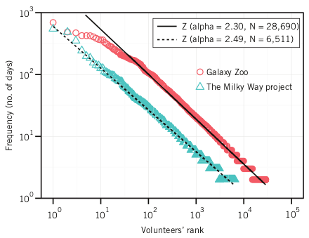

Códigos da Replicação Científica
Esta página apresenta os códigos e dados da oficina de replicação científica.
Conceito de replicação
Há três conceitos relacionados: repetição, replicação e reprodução. A esta oficina interessa apenas o conceito de replicação. Dada uma análise A conduzida no contexto C, replicar essa análise sinifica aplicá-la em um contexto D, que é diferente do contexto C. Nesse caso, tem-se o reuso do método A, mas não dos dados C. Os resultados da replicação em D podem ser diferentes dos resultados que tinham sido obtidos em C.
Artigo-base da replicação e análise replicada
O artigo Volunteers’ Engagement in Human Computation for Astronomy Projects apresenta uma análise de atividades de voluntários em projetos de ciência cidadã, padrão de que uma minoria de voluntários contribui em muitos dias e uma maioria de voluntários contribui em poucos dias. Ela é materializada como resultado na Figura 3 do artigo.
O objetivo da oficina de replicação é replicar essa análise para o contexto do repositório de software react. Ou seja, busca-se responder à seguinte pergunta: no repositório react há uma minoria de programadores que contribui em muitos dias e uma maioria de programadores que contribui em poucos dias?
Fases da replicação e códigos associados
- Coletar dados de cada commit feito no repositório. Código
getCommits.py; - Para cada programador, calcular a quantidade de dias em que fez pelo menos um commit no repositório. Código
getDays.py - Gerar o gráfico com mesma lógica (eixos X e Y) do artigo-base. Código
graphActivity
Dados usados coletados e gerados na replicação
Os dados brutos coletados por meio da API estão no arquivo data.json, a coleta foi feita em 01/05/2024. Os dados finais, totalmente processados e prontos para serem exibidos no gráfico, estão no arquivo activity.data. O gráfico resultante é Rplots.pdf.